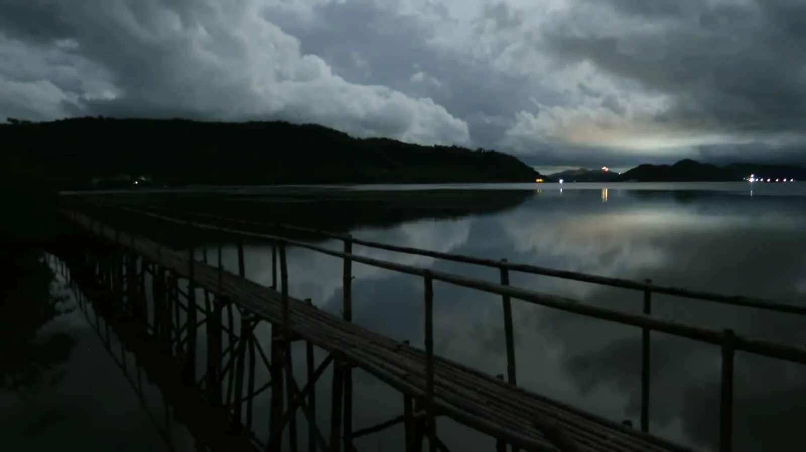
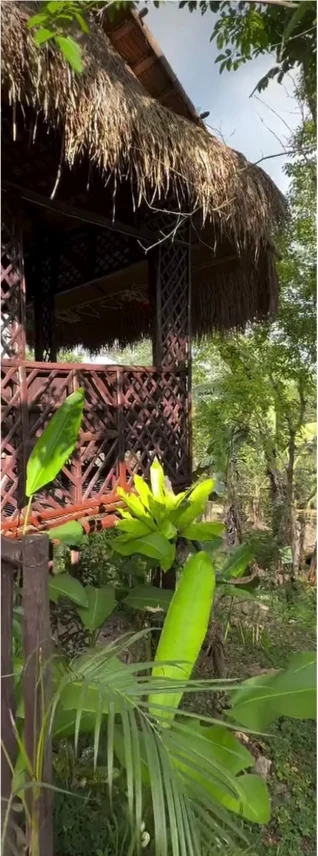
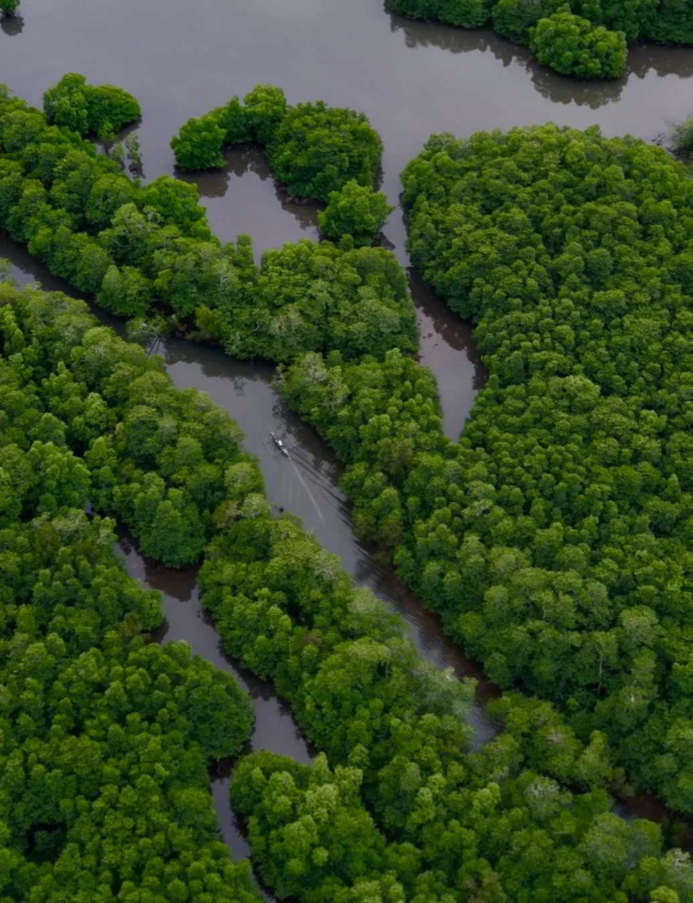

Seven days a week
Kingfisher Park is open throughout the week. Visitor sessions depend on staff, weather and approved schedules.

Find the beach on Google Maps, compare separate beach and BERAE schedules, and prepare for safe, respectful visits.
Kingfisher Park is open throughout the week. Visitor sessions depend on staff, weather and approved schedules.
On weekends: 5–9 PM, advance notice required. Beach personnel are on call, so do not arrive expecting a walk-in session.
Separate guided programs. Trails may involve hills that some visitors find strenuous.
Kayaking accommodates 28 people per session including guide(s); the guest maximum decreases with each guide required.
Start with the essentials: when the park is open, which experiences fit your visit, how tide conditions affect kayaking, and how to move through the park responsibly.
A Nature Trail day can include forest paths, farm stops, outdoor activities and time by Kilit Creek. Comfortable footwear, breathable clothing, sun protection and a refillable water bottle will help you prepare.
Early Riser is now confirmed by arrangement (₱150/person or ₱300 solo), payable separately on site. BERAE Tour A runs 8:00 AM–5:00 PM and Tour B runs 8:00 AM–7:00 PM; ask Ma’am Honey about the exact meeting place.

Before arrival, confirm the BERAE meeting point, group fitness for hill paths, dietary needs, arrival transport, kayak guide availability if applicable, and weather or tide conditions. The park does not provide a transfer service.
Search for Kingfisher Park, Coron on Google Maps. The mapped destination leads to the beach area; BERAE guests should ask Ma’am Honey for their exact meeting instructions.
The park currently does not offer guest transportation. Tricycles are a commonly recommended option; visitors may also arrange a van independently. No fixed fare or transfer service is promised.
SEARCH THE PARK ON GOOGLE MAPS ↗
For shorter experiences, the light changes the atmosphere from afternoon to evening. Full-day Tour A and Tour B follow separately approved schedules, which may start earlier.
Begin with the mangrove landscape and daytime experiences while the park is still bright.

Watch the landscape settle into evening and prepare for the park's after-dark experiences.

Experience the Firefly Boardwalk and, when conditions allow, kayaking for bioluminescent plankton and additional firefly viewing.
Every guest kayaking must wear a properly fitted life jacket and be accompanied by a park guide. Vests are supplied for the activity; bringing your own suitable vest is optional and subject to guide approval.
Never litter. Put rubbish in designated bins or take it out with you. Keep plastics and food waste away from waterways.
Do not remove shells, stones, plants, wildlife or park objects. Leave only footprints; take only photographs and memories.
No capturing, feeding or touching wildlife. Stay on permitted paths; avoid trampling roots, crops or young plants. Do not use flash around fireflies.
Guides may change or suspend water and trail activities because of tides, weather, water depth or other hazards. Inform the team of mobility needs.
BERAE tours include meals. Tell staff in advance about food allergies, dietary requests or special needs; do not assume a specific illustrated meal is guaranteed.
Simple visitor habits help keep the experience calm, safe and considerate of the firefly habitat and the wider natural setting.
Avoid flash around fireflies and follow photography guidance from the park or guide.
Keep voices and unnecessary noise low so the experience remains respectful of wildlife.
Listen to park and guide instructions, especially around water, dark paths and viewing areas.
Wear comfortable clothing and suitable footwear for dark or uneven outdoor conditions.
Wind, tide, weather, moonlight and natural behavior can influence what visitors experience.
For firefly tours, apply insect repellent before entering the park. Avoid spraying repellent near the firefly-viewing area, and do not touch or catch fireflies.
Confirmed reservations require the full booking amount paid online through the official Wix Bookings checkout once enabled. This prototype does not accept payments.
For a guest-requested cancellation, submit the refund request at least three full days before your scheduled visit to be eligible for a refund. Processing details will be provided by staff.
Guest cancellations requested with only two days or less remaining before the visit are non-refundable; the payment is retained by the park under its stated cancellation policy.
Message the Kingfisher Park team or Sir Tong to request a reschedule. Requests depend on availability and are not automatically approved. Park-initiated weather cancellations require separate staff advice.
Select the beach or BERAE experience that fits your schedule, review the 100% online payment and 3-day refund-request cutoff, then complete the reservation through the official Wix Bookings flow when it is activated.
VIEW RESERVATION OPTIONS →